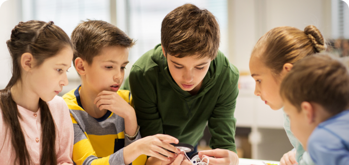

 Horário de visita Das 18h até 8h
Horário de visita Das 18h até 8h
 Atendemos fim de semana
Atendemos fim de semana
Teste
Presta assistência a crianças de 06 a 15 anos que se encontre em situação de risco e/ou vulnerabilidade social.
Instruções para visita
Venha como se sentir a vontade e traga muito amor e paciência para dar.
Horário de visita Das 18h até 8h
Atendemos fim de semana